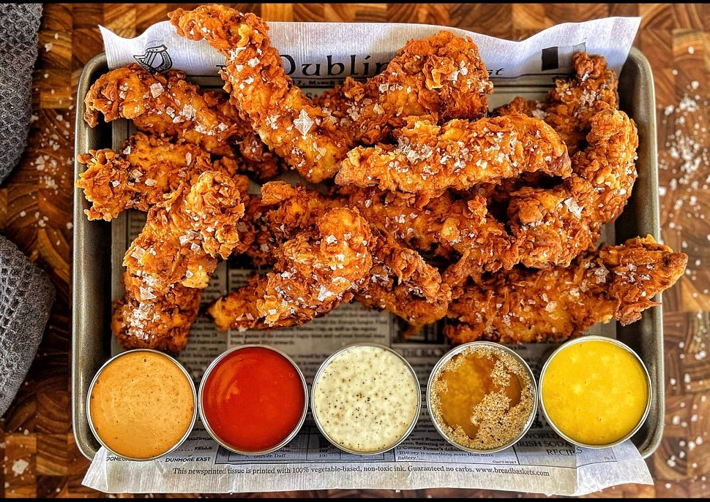

Crispy Chicken Strips Recipe

Ingredients
500g chicken breasts, cut into strips
1 cup buttermilk
1 cup all-purpose flour
1 teaspoon paprika
1 teaspoon garlic powder
1 teaspoon onion powder
1 teaspoon smoked paprika
1 teaspoon cayenne pepper (adjust for heat)
1 teaspoon black pepper
1 teaspoon salt
1/2 teaspoon dried thyme
1/2 teaspoon dried oregano
1/2 teaspoon sugar (optional, for a touch of sweetness)
Vegetable oil, for frying
Directions:
Marinating the Chicken
- In a bowl, combine the chicken strips and buttermilk. Cover and refrigerate for at least 1 hour (or overnight for best flavor).
Preparing the Coating
- In a shallow dish, whisk together flour, paprika, garlic powder, onion powder, smoked paprika, cayenne pepper, black pepper, salt, thyme, oregano, and sugar.
Coating the Chicken
- Remove the chicken from the buttermilk and let excess drip off.
- Coat each strip in the seasoned flour mixture, pressing down to adhere well.
- Shake off any excess flour and set the coated chicken aside.
Frying the Chicken
- In a large skillet or deep fryer, heat vegetable oil to 350°F (175°C).
- Fry the chicken strips in batches until golden brown and cooked through, about 5-7 minutes per batch.
- Transfer the fried chicken to a paper towel-lined plate to drain excess oil.
Serving
- Serve hot with your favorite dipping sauces or alongside sides like coleslaw and fries.